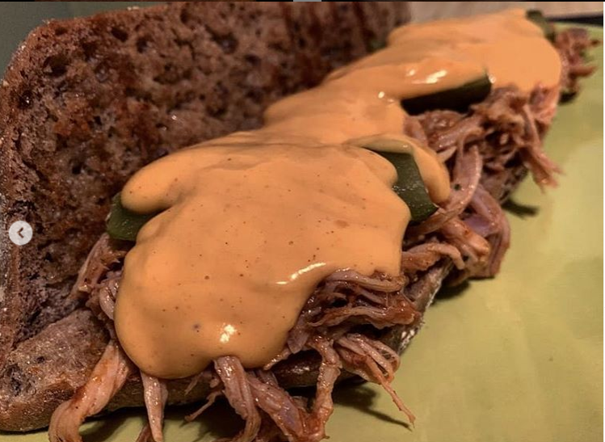

Pulled Pork Sandwich

Ingredients:
- 1kg boneless pork schoulder
- 1 tablespoon sea salt
- 1 teaspoon garlic powder
- ½ tablespoon liquid smoke
- 8 strips bacon
- 2 ciabatta
Time: 200 minutes
Steps:
- Quarter pork to portion into approximately ½-pound (225 gram) pieces. This will cut down cooking time.
- Place pork into a large bowl. Add salt, garlic powder, and liquid smoke, and mix until each piece of pork is evenly covered.
- Wrap each pork with 2 strips of bacon.
- Place pork into the slow cooker and cook for 3 hours on low.
- Take pork out onto a baking sheet. With 2 forks, pull apart the meat into desired size.
- Broil on high for a few minutes to until the ends of the pork start to crisp up.
- Serve on a ciabatta with colesaw.